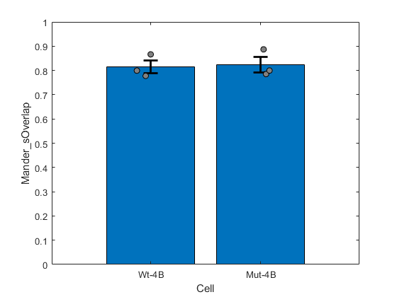

Contents
Figure S1
addpath('Z:\code\Nick')
Plot the Pearson's for G3BP1 and 4B-GFP for both cell lines
coLoc = readtable('Z:\imageData\SG_4B\Paper_Figures\Output_Figures\G3BP1_vs_4B_Colocalization_Data.xlsx');
coLoc = coLoc(coLoc.NaAsO2Dose == 125,:);
coLoc.Cell = categorical(coLoc.Cell,{'Wt-4B','Mut-4B'})
coLocStats = grpstats(coLoc,"Cell",["mean","sem"],"DataVars",["Pearson_sCorrelation","Mander_sOverlap"])
supF1 = figure;
bar(coLocStats.Cell,coLocStats.mean_Mander_sOverlap)
hold on;
errorbar(coLocStats.mean_Mander_sOverlap,coLocStats.sem_Mander_sOverlap,'LineStyle','none','LineWidth',2,'CapSize',15,'Color','k')
swarmchart(coLoc,"Cell","Mander_sOverlap",'XJitter','density','YJitter','none','MarkerEdgeColor','k','MarkerFaceColor',[0.5,0.5,0.5],'XJitterWidth',0.25)
ylim([0,1])
saveas(supF1,'Z:\imageData\SG_4B\Paper_Figures\Output_Figures\Figure_S1.fig')
saveas(supF1,'Z:\imageData\SG_4B\Paper_Figures\Output_Figures\Figure_S1.svg')
Warning: Column headers from the file were modified to make them valid MATLAB
identifiers before creating variable names for the table. The original column
headers are saved in the VariableDescriptions property.
Set 'VariableNamingRule' to 'preserve' to use the original column headers as
table variable names.
coLoc =
6×11 table
Name Cell TetTime NaAsO2Dose XY Pearson_sCorrelation Mander_sOverlap Mander_sOverlapCoefficientsK1 Mander_sOverlapCoefficientsK2 ColocalizationCoefficientsC1 ColocalizationCoefficientsC2
_______________________________________________________________ ______ _______ __________ __ ____________________ _______________ _____________________________ _____________________________ ____________________________ ____________________________
{'2023-05-03 TET curve NaAsO2 Curve DAPI 4B G3BP1 NFKb IF.nd2'} Wt-4B 24 125 23 0.6628 0.79928 0.95385 0.66975 1 1
{'2023-05-03 TET curve NaAsO2 Curve DAPI 4B G3BP1 NFKb IF.nd2'} Wt-4B 24 125 24 0.60246 0.7775 0.66144 0.91392 1 1
{'2023-05-03 TET curve NaAsO2 Curve DAPI 4B G3BP1 NFKb IF.nd2'} Mut-4B 24 125 71 0.65884 0.78517 1.0006 0.61612 1 1
{'2023-05-03 TET curve NaAsO2 Curve DAPI 4B G3BP1 NFKb IF.nd2'} Mut-4B 24 125 72 0.64031 0.79965 0.70025 0.91316 1 1
{'2023-01-19 EK 4B 120 min.nd2' } Wt-4B 24 125 1 0.71567 0.86624 0.59045 1.2709 1 1
{'2023-01-19 EK 4B 120 min.nd2' } Mut-4B 24 125 2 0.73752 0.88685 0.73055 1.0766 1 1
coLocStats =
2×6 table
Cell GroupCount mean_Pearson_sCorrelation sem_Pearson_sCorrelation mean_Mander_sOverlap sem_Mander_sOverlap
______ __________ _________________________ ________________________ ____________________ ___________________
Wt-4B Wt-4B 3 0.66031 0.032706 0.81434 0.026701
Mut-4B Mut-4B 3 0.67889 0.029799 0.82389 0.031756
